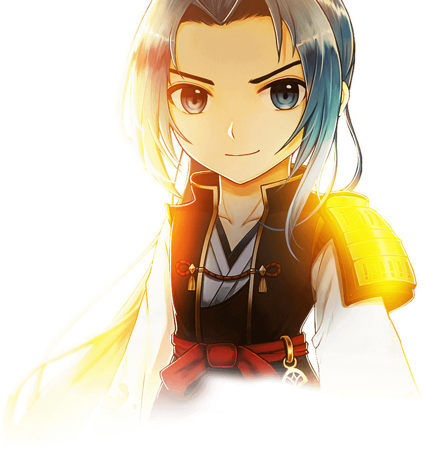

參訪者
新地圖
新功能
文物粉碎機
改版活動-城寨戰
新英雄技能卡

佐佐木小次郎
，創立了自己的流派「巖流」及秘劍「燕返」，並選用了超過三尺的太刀作為專武。小次郎愛用的太刀，出自名匠「備前長船長光」，劍術已達劍聖之境，佐佐木小次郎的秘劍「燕返」，更是能夠將長刀套性發揮到淋漓盡致的招式。
宮本武藏
，以二刀流聞名，自創了圓明流，後來更名為“二刀一流”或“二天一流”，並與天下之兵法家交手數次，沒有一次不成功的”，而且最後與岩流的兵法家佐佐木小次郎對決後成為傳說中的劍聖。
雷爵網絡科技股份有限公司 © 2022 Lager Network Technologies Inc.
All rights reserved.
 佐佐木小次郎
佐佐木小次郎 宮本武藏
宮本武藏